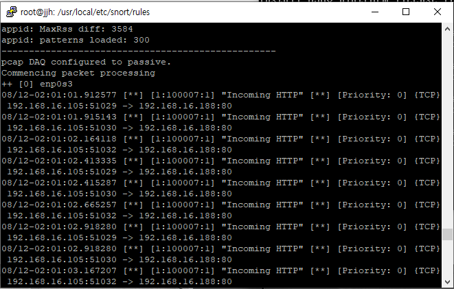
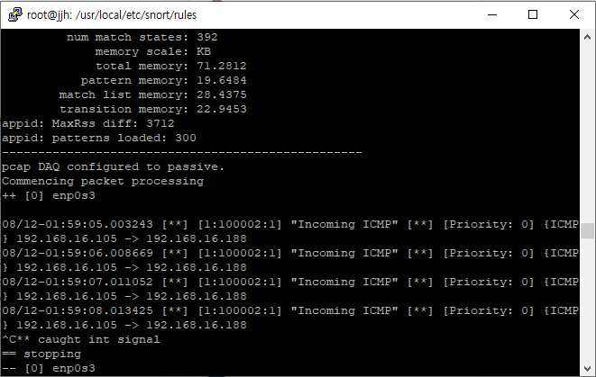
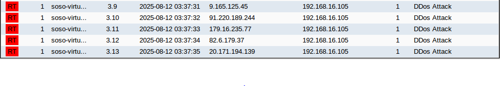
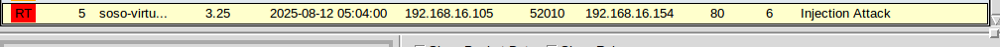
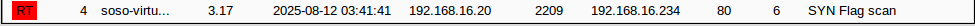

네트워크 보안

전체 네트워크 토폴로지

특정 HTTP 탐지

특정 ICMP 탐지

Rand-source DDoS 탐지

Injection 공격 탐지

SYN Flag Scanning 탐지
설명
Cisco-ASAv 방화벽을 활용하여 Security-Level 기반 트래픽 제어를 구성했습니다.
PfSense 기반 OpenVPN 구축과 Snort, Security Onion을 활용하여
HTTP, ICMP, DDoS, Injection 공격 탐지를 수행한 프로젝트입니다.